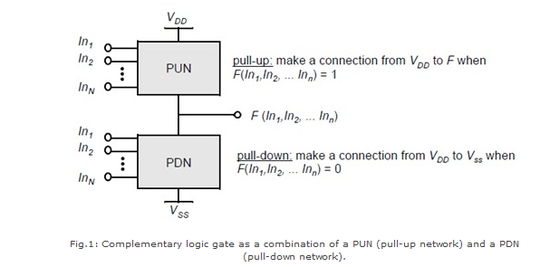
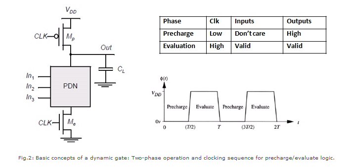

Shakshat Virtual Lab 
INDIAN INSTITUTE OF TECHNOLOGY GUWAHATI
The aim of this experiment is to design and plot the dynamic characteristics of 2-input NAND, NOR, XOR and XNOR gates based on CMOS static logic.
Introduction
Static logic is a design methodology in integrated circuit design where there is at all times some mechanism to drive the output either high or low. For example, in many of the popular logic families, such as TTL and traditional CMOS, there is always a low-impedance path between the output and either the supply voltage or the ground. The most widely used logic style is static CMOS. A static CMOS gate is a combination of two networks, called the pull-up network (PUN) and the pull-down network (PDN). The function of the PUN is to provide a connection between the output and VDD anytime the output of the logic gate is meant to be 1 (based on the inputs). Similarly, the function of the PDN is to connect the output to VSS when the output of the logic gate is meant to be 0 (based on the inputs). The PUN and PDN networks are constructed in a mutually exclusive fashion such that, one and only one of these networks is conducting in the steady state.

Dynamic logic is a design methodology in integrated circuit design in that it uses a clock signal in its implementation of combinational logic circuits. In dynamic logic, there is not always a mechanism driving the output high or low. In the most common version of this concept, the output is driven high or low during distinct parts of the clock cycle. Dynamic logic requires a minimum clock rate fast enough that the output state of each dynamic gate is used before it leaks out of the capacitance holding that state. The basic construction of a dynamic logic gate is shown in fig.2. The PDN (pull-down network) is constructed exactly as in complementary CMOS. The operation of this circuit is divided into two major phases: precharge and evaluation, with the mode of operation determined by the clock signal CLK.

Precharge: When CLK = 0, the output node Out is precharged to VDD by the PMOS transistor Mp. During that time, the evaluate NMOS transistor Me is off, so that the pull-down path is disabled. The evaluation FET eliminates any static power that would be consumed during the precharge period (this is, static current would flow between the supplies if both the pulldown and the precharge device were turned on simultaneously).
Evaluation: For CLK = 1, the precharge transistor Mp is off, and the evaluation transistor Me is turned on. The output is conditionally discharged based on the input values and the pull-down topology. If the inputs are such that the PDN conducts, then a low resistance path exists between Out and GND and the output is discharged to GND. If the PDN is turned off, the precharged value remains stored on the output capacitance CL, which is a combination of junction capacitances, the wiring capacitance, and the input capacitance of the fan-out gates. During the evaluation phase, the only possible path between the output node and a supply rail is to GND. Consequently, once Out is discharged, it cannot be charged again till then next precharge operation. The inputs to the gate can therefore make at most one transition during evaluation.
Static Logic Design of NAND, NOR, XOR and XNOR Gates

In order to design 2-input NAND, NOR, XOR and XNOR gates for equal rise and fall time, it is necessary to first design an inverter with equal rise and fall time. This involves compensating for the difference in electron and hole mobilities. For silicon material, the electron mobility is about 2.5 to 3 times greater than the hole mobility. Therefore, to have equal rise tand fall time in an inverter, we must choose the W/L ration of pMOS as 2.5 times greater than that of the nMOS transistor. After performing this task, we need to size the transistors of each gate under worst case conditions (of input combination) for charging and discharging resistances Rc and Rd. (In every gate circuit, the PUN provides maximum ON resistance for rise time and the PDN provides maximum ON resistance for fall time.) For a NAND gate, the worst case charging corresponds to an input combination where only one of the pMOS is ON and discharging takes place only when both nMOS’ are turned ON. i.e. in the worst case, Rc/Rd=1/2. Thus, in order to equalize both currents (considering also the mobility defferences), we must have (W/L)p=(2.5*2)(W/L)n. This can be achieved in a 180nm technology by choosing Wn=0.18 µm and Wp=0.90 µm. Similary in case of a NOR gate, (W/L)p must be equal to (2.5*0.5)(W/L)n which can be achieved by taking Wn=0.36µm and Wp=0.45µm. For XOR and XNOR gates, worst case Rc/Rd ratio is equal to one. Therefore, (W/L)p must be equal to (2.5*1)(W/L)n for both gates.